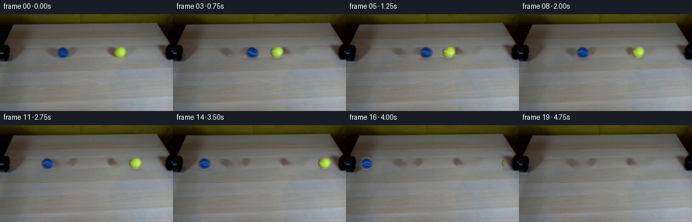
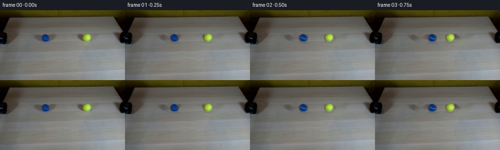

CODING AGENTS AS PIXEL WORLD MODELS
traex/DeepSeek-V4.1-Flash · 0032
点击播放 · 原生 RGB 像素
逐轮保存的候选
回放视频、检查图与代码变化。
每份候选均可单独播放。实际图片检查记录在下方工具轨迹中。
候选 01播放与检查图
点击播放 · 原生 RGB 像素


展开代码变化
--- 上一保存版本
+++ 本次保存版本
@@ -0,0 +1,228 @@
+from pathlib import Path
+
+import cv2
+import numpy as np
+from PIL import Image
+
+import artifact_io
+
+
+WIDTH = 256
+HEIGHT = 144
+FRAMES = 20
+FPS = 4
+
+ROOT = Path(__file__).resolve().parent
+
+
+def _feathered_disk(radius: float, size: int) -> np.ndarray:
+ """Anti-aliased circular coverage for a small sprite."""
+ yy, xx = np.mgrid[:size, :size].astype(np.float32)
+ center = (size - 1) / 2
+ distance = np.hypot(xx - center, yy - center)
+ return np.clip(radius + 0.65 - distance, 0.0, 1.0)
+
+
+def _clean_plate(frame: np.ndarray) -> np.ndarray:
+ """Remove the two source balls and their contact shadows."""
+ mask = np.zeros(frame.shape[:2], np.uint8)
+ cv2.ellipse(mask, (93, 58), (13, 12), 0, 0, 360, 255, -1)
+ cv2.ellipse(mask, (177, 58), (13, 12), 0, 0, 360, 255, -1)
+ # Include the soft table shadows immediately under the balls.
+ cv2.ellipse(mask, (93, 67), (12, 4), 0, 0, 360, 255, -1)
+ cv2.ellipse(mask, (177, 67), (12, 4), 0, 0, 360, 255, -1)
+ return cv2.inpaint(frame, mask, 5, cv2.INPAINT_TELEA)
+
+
+def _extract_sprite(frame: np.ndarray, center: tuple[float, float], radius: float) -> tuple[np.ndarray, np.ndarray]:
+ cx, cy = center
+ half = 13
+ x0 = int(round(cx)) - half
+ y0 = int(round(cy)) - half
+ size = half * 2 + 1
+ sprite = frame[y0 : y0 + size, x0 : x0 + size].astype(np.float32)
+ alpha = _feathered_disk(radius, size)
+ return sprite, alpha
+
+
+def _soft_shadow(cx: float, cy: float, strength: float) -> tuple[np.ndarray, np.ndarray]:
+ size = 33
+ half = size // 2
+ yy, xx = np.mgrid[:size, :size].astype(np.float32)
+ dx = (xx - half) / 12.0
+ dy = (yy - half) / 3.3
+ alpha = np.exp(-(dx * dx + dy * dy) * 1.8) * strength
+ return np.array([cx, cy], np.float32), alpha.astype(np.float32)
+
+
+def _place_alpha(
+ canvas: np.ndarray,
+ sprite: np.ndarray,
+ alpha: np.ndarray,
+ x: float,
+ y: float,
+ clip_left: int = 0,
+ clip_right: int = WIDTH,
+) -> None:
+ """Bilinearly place one RGBA sprite onto the RGB canvas."""
+ size = sprite.shape[0]
+ center = (size - 1) / 2
+ tx = x - center
+ ty = y - center
+
+ dst_x0 = max(0, int(np.floor(tx)))
+ dst_y0 = max(0, int(np.floor(ty)))
+ dst_x1 = min(WIDTH, int(np.ceil(tx + size)))
+ dst_y1 = min(HEIGHT, int(np.ceil(ty + size)))
+ if dst_x1 <= dst_x0 or dst_y1 <= dst_y0:
+ return
+
+ yy, xx = np.mgrid[dst_y0:dst_y1, dst_x0:dst_x1].astype(np.float32)
+ sx = xx - tx
+ sy = yy - ty
+
+ x0 = np.floor(sx).astype(np.int32)
+ y0 = np.floor(sy).astype(np.int32)
+ fx = (sx - x0)[..., None]
+ fy = (sy - y0)[..., None]
+ x1 = np.clip(x0 + 1, 0, size - 1)
+ y1 = np.clip(y0 + 1, 0, size - 1)
+ x0 = np.clip(x0, 0, size - 1)
+ y0 = np.clip(y0, 0, size - 1)
+
+ rgb = (
+ sprite[y0, x0] * (1 - fx) * (1 - fy)
+ + sprite[y0, x1] * fx * (1 - fy)
+ + sprite[y1, x0] * (1 - fx) * fy
+ + sprite[y1, x1] * fx * fy
+ )
+ a = (
+ alpha[y0, x0] * (1 - fx[..., 0]) * (1 - fy[..., 0])
+ + alpha[y0, x1] * fx[..., 0] * (1 - fy[..., 0])
+ + alpha[y1, x0] * (1 - fx[..., 0]) * fy[..., 0]
+ + alpha[y1, x1] * fx[..., 0] * fy[..., 0]
+ )
+
+ xx_grid = xx.astype(np.int32)
+ visible = (xx_grid >= clip_left) & (xx_grid < clip_right)
+ a *= visible
+ a = a[..., None]
+ canvas[dst_y0:dst_y1, dst_x0:dst_x1] = (
+ canvas[dst_y0:dst_y1, dst_x0:dst_x1] * (1 - a) + rgb * a
+ )
+
+
+def _place_shadow(canvas: np.ndarray, cx: float, cy: float, strength: float) -> None:
+ origin, alpha = _soft_shadow(cx, cy, strength)
+ size = alpha.shape[0]
+ half = size // 2
+ tx = int(round(origin[0])) - half
+ ty = int(round(origin[1])) - half
+ x0 = max(0, tx)
+ y0 = max(0, ty)
+ x1 = min(WIDTH, tx + size)
+ y1 = min(HEIGHT, ty + size)
+ if x1 <= x0 or y1 <= y0:
+ return
+ sub = alpha[y0 - ty : y1 - ty, x0 - tx : x1 - tx, None]
+ # A neutral, slightly cool contact shadow reads naturally on the warm wood.
+ shade = np.array([0.57, 0.60, 0.64], np.float32)
+ canvas[y0:y1, x0:x1] = (
+ canvas[y0:y1, x0:x1].astype(np.float32) * (1.0 - sub * (1.0 - shade))
+ ).astype(np.uint8)
+
+
+def _motion_blur(plate: np.ndarray, cx: float, cy: float, velocity: float, radius: float) -> np.ndarray:
+ """Add a restrained horizontal blur streak behind each moving ball."""
+ if abs(velocity) < 1.0:
+ return plate
+ length = min(7, int(round(abs(velocity) * 0.55)))
+ if length < 2:
+ return plate
+ pad = length + 3
+ x0 = max(0, int(round(cx)) - pad)
+ x1 = min(WIDTH, int(round(cx)) + pad + 1)
+ y0 = max(0, int(round(cy)) - 11)
+ y1 = min(HEIGHT, int(round(cy)) + 12)
+ roi = plate[y0:y1, x0:x1].astype(np.float32)
+ blurred = roi.copy()
+ for offset in range(-length, length + 1):
+ if offset == 0:
+ continue
+ shifted = np.roll(roi, offset if velocity > 0 else -offset, axis=1)
+ weight = 0.07 * (1.0 - abs(offset) / (length + 1))
+ blurred = blurred * (1.0 - weight) + shifted * weight
+ plate[y0:y1, x0:x1] = blurred.astype(np.uint8)
+ return plate
+
+
+def _rolling_seam(canvas: np.ndarray, cx: float, cy: float, angle: float, color: np.ndarray) -> None:
+ """Draw a faint tennis seam that shifts with the rolling angle."""
+ yy, xx = np.mgrid[:HEIGHT, :WIDTH].astype(np.float32)
+ dx = xx - cx
+ dy = yy - cy
+ rr = np.hypot(dx, dy)
+ inside = rr < 8.7
+
+ # A shallow S-curve is a recognizable low-resolution tennis-ball seam.
+ curve = 1.7 * np.sin(dx * 0.34 + angle) + 0.9 * np.sin(angle * 0.55)
+ distance = np.abs(dy - curve)
+ seam = inside & (distance < 0.78)
+ fade = np.clip((8.7 - rr) / 2.0, 0.0, 1.0) * 0.28
+ alpha = seam.astype(np.float32) * fade
+ canvas[:] = canvas * (1.0 - alpha[..., None]) + color * alpha[..., None]
+
+
+def generate() -> np.ndarray:
+ first = np.asarray(Image.open(ROOT / "first_frame.png").convert("RGB"), np.uint8)
+ plate = _clean_plate(first)
+
+ blue_sprite, blue_alpha = _extract_sprite(first, (93.0, 56.7), 9.5)
+ yellow_sprite, yellow_alpha = _extract_sprite(first, (177.2, 55.8), 9.5)
+
+ x_left = 92.9
+ x_right = 177.2
+ y_left = 56.7
+ y_right = 55.8
+ radius = 9.5
+ speed = 8.0 # pixels per frame
+ collision_frame = ((x_right - x_left) - 2.0 * radius) / (2.0 * speed)
+
+ frames = []
+ for index in range(FRAMES):
+ if index == 0:
+ frames.append(first.copy())
+ continue
+
+ canvas = plate.copy()
+ signed_time = index if index < collision_frame else 2.0 * collision_frame - index
+ left_x = x_left + speed * signed_time
+ right_x = x_right - speed * signed_time
+ left_velocity = speed if index < collision_frame else -speed
+ right_velocity = -speed if index < collision_frame else speed
+
+ # Contact shadows are laid down before the balls so the sphere edges stay crisp.
+ _place_shadow(canvas, left_x, y_left + 9.4, 0.34)
+ _place_shadow(canvas, right_x, y_right + 9.4, 0.34)
+ _motion_blur(canvas, left_x, y_left, left_velocity, radius)
+ _motion_blur(canvas, right_x, y_right, right_velocity, radius)
+
+ _place_alpha(canvas, blue_sprite, blue_alpha, left_x, y_left, clip_left=16, clip_right=WIDTH)
+ _place_alpha(canvas, yellow_sprite, yellow_alpha, right_x, y_right, clip_left=0, clip_right=234)
+
+ # The faint seam is subtle but makes the horizontal travel read as rolling.
+ if index >= 2:
+ blue_angle = 0.12 * index * (1 if left_velocity > 0 else -1)
+ yellow_angle = -0.12 * index * (1 if right_velocity < 0 else -1)
+ if left_x > 20:
+ _rolling_seam(canvas, left_x, y_left, blue_angle, np.array([135, 177, 220], np.float32))
+ if right_x < 230:
+ _rolling_seam(canvas, right_x, y_right, yellow_angle, np.array([245, 244, 207], np.float32))
+
+ frames.append(np.clip(canvas, 0, 255).astype(np.uint8))
+
+ return np.stack(frames)
+
+
+if __name__ == "__main__":
+ artifact_io.save(generate(), ROOT)
可观测工具轨迹
实际执行的命令与返回图片。
命令 1exit 0
/bin/bash -c "pwd && rg --files -g '"'!*.mp4'"' -g '"'!*.mov'"' | sort"
命令 2exit 0
/bin/bash -c "sed -n '1,240p' GENERATION_RULES.md"
命令 3exit 0
/bin/bash -c 'cat prompt.txt'
命令 4exit 0
/bin/bash -c 'ls -la && file first_frame.png 2>/dev/null || true && git status --short'
命令 5exit 0
/bin/bash -c "sed -n '1,260p' artifact_io.py"
命令 6exit 0
/bin/bash -c "sed -n '1,260p' player_template.html"
命令 7exit 0
/bin/bash -c "python - <<'PY'
from PIL import Image
import numpy as np
im=np.array(Image.open('first_frame.png').convert('RGB'))
print(im.shape, im.dtype, im.min(), im.max())
print('corners', [im[y,x].tolist() for y,x in [(0,0),(0,255),(143,0),(143,255)]])
print('mean',im.mean((0,1)).round(1).tolist())
# coarse 16x9 color grid
h,w=im.shape[:2]
for yy in range(9):
row=[]
for xx in range(16):
a=im[yy*h//9:(yy+1)*h//9,xx*w//16:(xx+1)*w//16].mean((0,1)).astype(int)
row.append('#%02x%02x%02x'%tuple(a))
print(' '.join(row))
PY"命令 8exit 0
/bin/bash -c "python - <<'PY'
from PIL import Image
im=Image.open('first_frame.png')
print(im.info, im.mode, im.size)
PY"命令 9exit 0
/bin/bash -c "python - <<'PY'
from PIL import Image
import numpy as np
im=np.asarray(Image.open('first_frame.png').convert('RGB')).astype(float)
# Find highly saturated / blue/yellow / bright regions
r,g,b=im.transpose(2,0,1)
sat=im.max(2)-im.min(2); lum=im.mean(2)
for name,m in [('yellow',(r>100)&(g>90)&(b<90)&(r>b*1.5)),('blue',(b>90)&(b>r*1.25)&(b>g*1.05)),('dark',lum<25),('bright',lum>150),('sat',sat>45)]:
ys,xs=np.where(m)
print(name, len(xs), 'bbox', (xs.min(),ys.min(),xs.max(),ys.max()) if len(xs) else None, 'meanxy', (xs.mean(),ys.mean()) if len(xs) else None)
PY"命令 10exit 0
/bin/bash -c "python - <<'PY'
import cv2
im=cv2.imread('first_frame.png')
g=cv2.cvtColor(im,cv2.COLOR_BGR2GRAY)
e=cv2.Canny(g,25,70)
lines=cv2.HoughLinesP(e,1,3.14159/180,threshold=18,minLineLength=20,maxLineGap=5)
if lines is not None:
for l in sorted(lines[:,0].tolist(), key=lambda z:-((z[2]-z[0])**2+(z[3]-z[1])**2))[:50]: print(l)
PY"命令 11exit 0
/bin/bash -c "python - <<'PY'
import cv2, numpy as np
im=cv2.imread('first_frame.png')
hsv=cv2.cvtColor(im,cv2.COLOR_BGR2HSV)
# saturation colored blobs, print connected comps with area >5
for name,mask in [('blue',cv2.inRange(hsv,np.array([90,50,30]),np.array([135,255,255]))),('yellow',cv2.inRange(hsv,np.array([15,50,40]),np.array([45,255,255]))),('dark',cv2.inRange(hsv,np.array([0,0,0]),np.array([180,255,45])) )]:
n,lab,st,cen=cv2.connectedComponentsWithStats(mask)
print('\\n',name)
for i in sorted(range(1,n), key=lambda i:-st[i,4])[:20]:
print('area',st[i,4],'bbox',st[i,:4].tolist(),'center',cen[i].round(1).tolist())
PY"命令 12exit 0
/bin/bash -c "python - <<'PY'
from PIL import Image
import numpy as np
im=np.asarray(Image.open('first_frame.png').convert('RGB'))
# Render ANSI-ish 2x1 cells using brightness blocks for selected crop
chars=' .:-=+*#%@'
for y in range(0,72,2):
row=''
for x in range(0,256,2):
c=im[y:y+2,x:x+2].mean((0,1))
row+=chars[min(9,int(c.mean()/25.6))]
print(row)
PY"命令 13exit 0
/bin/bash -c "python - <<'PY'
from PIL import Image
import numpy as np
im=np.asarray(Image.open('first_frame.png').convert('RGB')).astype(int)
# sample vertical center columns / horizontal rows
for x in [0,5,10,20,40,60,80,92,110,128,150,175,200,230,245,255]:
print('x',x, ' '.join(f'{y}:{tuple(im[y,x])}' for y in [0,5,10,15,20,30,40,48,52,56,60,64,70,80,100,120,140]))
print('\\nrow means every 8')
for y in range(0,144,8): print(y, im[y].mean(0).round(0).astype(int).tolist(), 'minmax',im[y].min(0).tolist(),im[y].max(0).tolist())
PY"命令 14exit 0
/bin/bash -c "python - <<'PY'
from PIL import Image
import numpy as np
im=np.asarray(Image.open('first_frame.png').convert('RGB')).astype(float)
# categorize each 2x1 block y42..70 x0..255
for y in range(42,70,2):
row=''
for x in range(0,256,2):
c=im[y:y+2,x:x+2].mean((0,1)); r,g,b=c
if b>r*1.25 and b>g*1.05 and b>60: ch='B'
elif r>100 and g>90 and b<90 and r>b*1.5: ch='Y'
elif c.mean()<35: ch='#'
elif c.mean()<65: ch='d'
elif c.mean()<90: ch='o'
elif c.mean()<115: ch='.'
elif c.mean()<135: ch=':'
else: ch=' '
row+=ch
print(f'{y:3d} {row}')
PY"命令 15exit 0
/bin/bash -c "python - <<'PY'
from PIL import Image
import numpy as np
im=np.asarray(Image.open('first_frame.png').convert('RGB'))
chars=' .:-=+*#%@'
# use 1px horizontal x 2px vertical, crop x0-120 y42-72 (60 chars) then x150-256
for a,b in [(0,120),(150,256)]:
print('\\nCROP',a,b)
for y in range(40,72,2):
row=''
for x in range(a,b):
c=im[y:y+2,x:x+1].mean((0,1)); row+=chars[min(9,int(c.mean()/25.6))]
print(f'{y:3d} {row}')
PY"命令 16exit 0
/bin/bash -c "python - <<'PY'
from PIL import Image
import numpy as np
im=np.asarray(Image.open('first_frame.png').convert('RGB')).astype(int)
for x in [92,175]:
print('BALL',x)
for y in range(44,70):
print(y, tuple(im[y,x]), 'sat',int(im[y,x].max()-im[y,x].min()))
PY"命令 17exit 0
/bin/bash -c "python - <<'PY'
from PIL import Image
import numpy as np
im=np.asarray(Image.open('first_frame.png').convert('RGB')).astype(float)
for name,(cx,cy) in [('blue',(92.9,56.7)),('yellow',(175.1,55.8))]:
print('\\n'+name)
for y in range(47,67):
row=''
for x in range(int(cx)-11,int(cx)+12):
r,g,b=im[y,x]
if b>r*1.2 and b>g*1.05: val=b
elif r>g*.9 and g>b*1.3: val=g
else: val=(r+g+b)/3
# within circle distinguish intensity of chromatic object
d=((x-cx)**2+(y-cy)**2)**.5
if d>9.2: row+=' '
else:
# normalized likely ball brightness 0..255
row += ' .:-=+*#%@'[min(9,max(0,int(val/26)))]
print(f'{y:2d} {row}')
PY"命令 18exit 0
/bin/bash -c "python - <<'PY'
from PIL import Image
import numpy as np
im=np.asarray(Image.open('first_frame.png').convert('RGB')).astype(int)
r,g,b=im.transpose(2,0,1)
for name,m in [('blue',(b-r>25)&(b-g>15)&(b>50)),('yellow',(g-b>20)&(r-b>20)&(g>80))]:
print(name)
for y in range(42,72):
xs=np.where(m[y])[0]
# restrict likely ball x<150 or >150
xs=xs[(xs<150) if name=='blue' else (xs>150)]
if len(xs): print(y, xs.min(),xs.max(),len(xs))
PY"命令 19exit 0
/bin/bash -c "python - <<'PY'
from PIL import Image
import numpy as np
im=np.asarray(Image.open('first_frame.png').convert('RGB')).astype(int)
# edge map print for crop
from PIL import ImageFilter
g=np.asarray(Image.fromarray(im.astype('uint8')).convert('L')).astype(float)
gx=np.abs(np.diff(g,axis=1)); gy=np.abs(np.diff(g,axis=0)); e=np.zeros_like(g); e[:,1:]+=gx; e[1:]+=gy
for a,b in [(0,130),(155,256)]:
print('\\nCROP',a,b)
for y in range(40,72):
row=''
for x in range(a,b):
v=e[y,x]
row += ' .:-=+*#%@'[min(9,int(v/15))]
print(f'{y:3d} {row}')
PY"命令 20exit 0
/bin/bash -c "python - <<'PY'
from PIL import Image
import numpy as np
im=np.asarray(Image.open('first_frame.png').convert('RGB')).astype(float)
# Pixel RGB matrix crop print compact hex categories
for name,(x0,x1,y0,y1) in [('left',(0,22,14,72)),('right',(230,256,14,72))]:
print('\\n',name)
for y in range(y0,y1,2):
row=''
for x in range(x0,x1):
c=im[y:y+2,x:x+1].mean((0,1)); lum=c.mean()
row+=' .:-=+*#%@'[min(9,int(lum/25.6))]
print(f'{y:2d} {row}')
PY"命令 21exit 0
/bin/bash -c "python - <<'PY'
from PIL import Image
import numpy as np
im=np.asarray(Image.open('first_frame.png').convert('RGB')).astype(int)
for p in [(10,20),(10,50),(20,50),(20,70),(240,50),(245,70),(128,10),(128,14),(128,16),(128,20),(128,70),(128,72)]:
x,y=p; print(p, im[y,x].tolist())
# exact difference row transitions via center x
for x in [128,10,245]:
print('\\nx',x)
prev=None
for y in range(0,90):
v=tuple(im[y,x]); d=0 if prev is None else np.abs(im[y,x]-np.array(prev)).sum()
if d>8: print(y,v,'d',d)
prev=v
PY"命令 22exit 0
/bin/bash -c "python - <<'PY'
from PIL import Image
import numpy as np
im=np.asarray(Image.open('first_frame.png').convert('RGB')).astype(int)
for name,(cx,cy,rad) in [('blue',(93,57,10)),('yellow',(177,56,10))]:
print('\\n',name)
for y in range(cy-rad,cy+rad+1):
vals=[]
for x in range(cx-rad,cx+rad+1):
d=((x-cx)**2+(y-cy)**2)**.5
if d>rad: vals.append(' ')
else:
r,g,b=im[y,x]
if name=='blue': vals.append(f'{b//10:02d}' if b-r>15 else '..')
else: vals.append(f'{max(r,g)//10:02d}' if g-b>15 else '..')
print(f'{y:2d}', ' '.join(vals))
PY"命令 23exit 0
/bin/bash -c "python - <<'PY'
from PIL import Image
import numpy as np
im=np.asarray(Image.open('first_frame.png').convert('RGB')).astype(int)
for y in [46,47,48,49,50,51,52,55,58,60,63,65,66,68]:
print('y',y,'blue',[(x,tuple(im[y,x])) for x in range(80,107) if (im[y,x,2]-im[y,x,0]>10)][:3], 'yellow',[(x,tuple(im[y,x])) for x in range(165,190) if (im[y,x,1]-im[y,x,2]>10)][:3])
PY"命令 24exit 0
/bin/bash -c "python - <<'PY'
from PIL import Image
import numpy as np
im=np.asarray(Image.open('first_frame.png').convert('RGB')).astype(float)
# Print channels around balls with exact block chars 2x2
for name,(x0,x1) in [('blue',(78,108)),('yellow',(160,193))]:
print('\\n'+name)
for y in range(45,69,2):
row=''
for x in range(x0,x1,2):
c=im[y:y+2,x:x+2].mean((0,1)); row+=' .:-=+*#%@'[min(9,int(c.mean()/25.6))]
print(f'{y:2d} {row}')
PY"命令 25exit 0
/bin/bash -c "python - <<'PY'
from PIL import Image
import numpy as np
im=np.asarray(Image.open('first_frame.png').convert('RGB')).astype(float)
# contact shadows: compare local horizontal gradient at row 68-72; ascii 1px x1
for y in range(60,76):
row=''
for x in range(50,220):
c=im[y,x]; lum=c.mean(); row+=' .:-=+*#%@'[min(9,int(lum/25.6))]
print(f'{y:2d} {row}')
PY"命令 26exit 0
/bin/bash -c "python - <<'PY'
import cv2, numpy as np
from PIL import Image
im=cv2.imread('first_frame.png')
for name,roi in [('left',(0,10,40,72)),('right',(235,10,256,72))]:
x0,y0,x1,y1=roi
crop=im[y0:y1,x0:x1]
print(name)
# print RGB average per row leftmost to rightmost and unique colors
for y in range(y0,y1,2):
print(y, crop[y-y0].mean(0).round().astype(int).tolist())
PY"命令 27exit 0
/bin/bash -c "python - <<'PY'
from PIL import Image
import numpy as np
im=np.asarray(Image.open('first_frame.png').convert('RGB')).astype(int)
# crop display larger nearest to /tmp? use sixel not avail. analyze blocks with coordinates for pipe left
for x0,x1 in [(0,16),(16,32),(232,256)]:
print('\\nX',x0,x1)
print(' '+''.join(str(x//10%10) for x in range(x0,x1)))
print(' '+''.join(str(x%10) for x in range(x0,x1)))
for y in range(10,72,2):
row=''
for x in range(x0,x1):
c=im[y:y+2,x].mean(0); lum=c.mean(); row+=' .:-=+*#%@'[min(9,int(lum/25.6))]
print(f'{y:2d} {row}')
PY"命令 28exit 1
/bin/bash -c 'python generate.py'
命令 29exit 0
/bin/bash -c "python generate.py && python - <<'PY'
from PIL import Image
import numpy as np
first=np.asarray(Image.open('first_frame.png').convert('RGB'))
frames=np.stack([np.asarray(Image.open(f'frames/{i:02d}.png').convert('RGB')) for i in range(20)])
print('shape',frames.shape,'frame0 identical',np.array_equal(first,frames[0]),'max diff',np.abs(first.astype(int)-frames[0].astype(int)).max())
print('frame changes', [int(np.any(frames[i]"'!=frames[i-1],axis=2).sum()) for i in range(1,20)])
PY'命令 30exit 0
/bin/bash -c "python - <<'PY'
from generate import _clean_plate
from PIL import Image
import numpy as np
p=_clean_plate(np.asarray(Image.open('first_frame.png').convert('RGB')))
chars=' .:-=+*#%@'
for y in range(40,78):
row=''
for x in range(60,210):
row+=chars[min(9,int(p[y,x].mean()/25.6))]
print(f'{y:2d} {row}')
PY"命令 31exit 0
/bin/bash -c "python - <<'PY'
from PIL import Image
import numpy as np
for idx in [1,2,3,4,5,6,8,10,12,15,17,19]:
im=np.asarray(Image.open(f'frames/{idx:02d}.png').convert('RGB')).astype(float)
r,g,b=im.transpose(2,0,1)
mb=(b-r>25)&(b-g>15)&(b>50)
my=(g-b>20)&(r-b>20)&(g>80)
for name,m in [('B',mb),('Y',my)]:
ys,xs=np.where(m & (np.indices(m.shape)[0]>40) & (np.indices(m.shape)[0]<75))
if len(xs): print(idx,name,round(xs.mean(),1),round(ys.mean(),1),len(xs), (xs.min(),xs.max()))
PY"命令 32exit 0
/bin/bash -c "python - <<'PY'
from PIL import Image
import numpy as np
im=np.asarray(Image.open('frames/10.png').convert('RGB')).astype(int)
# show colors and local masks for blue ball around x77 and yellow x192
for name,cx in [('B',77),('Y',192)]:
print(name)
for y in range(46,68,2):
row=''
for x in range(cx-13,cx+14):
r,g,b=im[y,x]
if name=='B': q=b-r
else: q=g-b
row += ' .:-=+*#%@'[min(9,max(0,int(q/12)))]
print(f'{y:2d}',row)
PY"命令 33exit 0
/bin/bash -c "python - <<'PY'
from PIL import Image
import numpy as np
f=np.stack([np.asarray(Image.open(f'frames/{i:02d}.png').convert('RGB')).astype(float) for i in range(20)])
# Quantify table area reconstruction residuals vs expected local neighbor trends excluding balls and pipes
for i in [1,2,3,4,5,10,15,19]:
im=f[i]
# ball mask saturated
r,g,b=im.transpose(2,0,1); sat=im.max(2)-im.min(2)
mask=(sat>18)&(np.indices(sat.shape)[0]>40)&(np.indices(sat.shape)[0]<75)&(np.indices(sat.shape)[1]>20)&(np.indices(sat.shape)[1]<235)
# connected components area
import cv2
n,lab,st,cen=cv2.connectedComponentsWithStats(mask.astype('uint8'))
comps=sorted([(int(st[j,4]),tuple(np.round(cen[j],1))) for j in range(1,n) if st[j,4]>5], reverse=True)
print(i,comps[:5])
PY"命令 34exit 0
/bin/bash -c "python - <<'PY'
from PIL import Image
import numpy as np
im=np.asarray(Image.open('frames/10.png').convert('RGB')).astype(int)
for name,cx in [('B',77),('Y',192)]:
print(name)
for y in range(44,70):
xs=[]
for x in range(cx-14,cx+15):
r,g,b=im[y,x]
if (name=='B' and b-r>20) or (name=='Y' and g-b>20): xs.append(x)
if xs: print(y,min(xs),max(xs),len(xs))
PY"命令 35exit 0
/bin/bash -c "python - <<'PY'
from PIL import Image
import numpy as np
im=np.asarray(Image.open('frames/10.png').convert('RGB')).astype(int)
# inspect pixels ball edges / plate residual around blue at cx77
for y in [47,48,49,50,63,64,65,66,67,68,69,70]:
print(y, [(x,tuple(im[y,x])) for x in [62,63,64,65,66,67,68,69,70,71,86,87,88,89,90,91,92]])
PY"命令 36exit 0
/bin/bash -c "python - <<'PY'
from PIL import Image
import numpy as np
for i in [0,1,2,3,4,5,10,15,19]:
im=np.asarray(Image.open(f'frames/{i:02d}.png').convert('RGB')).astype(int)
print('frame',i)
# vertical seam: mean diff between adjacent cols in tabletop excluding balls
d=np.abs(np.diff(im,axis=1)).mean(2)
for x in [16,17,18,19,20,21,22,90,100,160,176,192,233,234,235,236,237,238]:
print(x,round(d[70:140,x].mean(),1),end='; ')
print()
PY"命令 37exit 0
/bin/bash -c "python - <<'PY'
from PIL import Image
import numpy as np
im=np.asarray(Image.open('frames/10.png').convert('RGB')).astype(int)
# Show actual blue sprite in RGB-ish: hue-class ASCII based dominant channel and lum
for y in range(45,68):
row=''
for x in range(63,92):
r,g,b=im[y,x]
if b-r>20 and b-g>10: row+='B' if b>90 else 'b'
elif r-g>8: row+='r'
elif abs(r-g)<5 and abs(g-b)<8: row+='.'
else: row+='o'
print(f'{y:2d} {row}')
PY"命令 38exit 1
/bin/bash -c "python - <<'PY'
from PIL import Image
import numpy as np
im=np.asarray(Image.open('first_frame.png').convert('RGB')).astype(float)
mask=np.zeros(im.shape[:2],bool)
Y,X=np.mgrid[:144,:256]
for cx,cy,rx,ry in [(93,57,14,13),(177,56,14,13),(93,67,14,5),(177,67,14,5)]: mask |= ((X-cx)/rx)**2+((Y-cy)/ry)**2<1
p=im.copy()
for y in range(144):
good=~mask[y]
xs=np.where(good)[0]
runs=[]
inside=False
for x in range(256):
if mask[y,x] and not inside: start=x; inside=True
elif not mask[y,x] and inside: runs.append((start,x-1));inside=False
if inside:runs.append((start,255))
for a,b in runs:
l=a-1;r=b+1
if l>=0 and r<256:
t=np.linspace(0,1,b-a+2)[1:-1]
for c in range(3): p[y,a:b+1,c]=im[y,l,c]*(1-t)+im[y,r,c]*t
elif l>=0: p[y,a:b+1]=im[y,l]
elif r<256:p[y,a:b+1]=im[y,r]
chars=' .:-=+*#%@'
for y in range(42,76):
row=''
for x in range(55,215):
row+=chars[min(9,int(p[y,x].mean()/25.6))]
print(f'{y:2d} {row}')
PY"保存候选 1 份；完成命令 38 次；可验证图片返回 0 张。原始 API 响应与完整日志保留在本地。